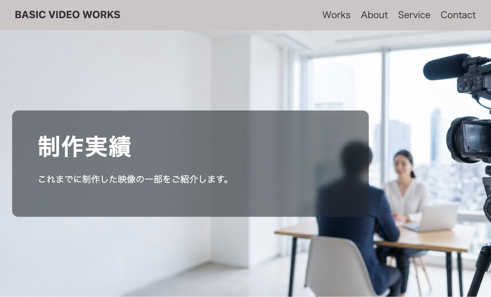
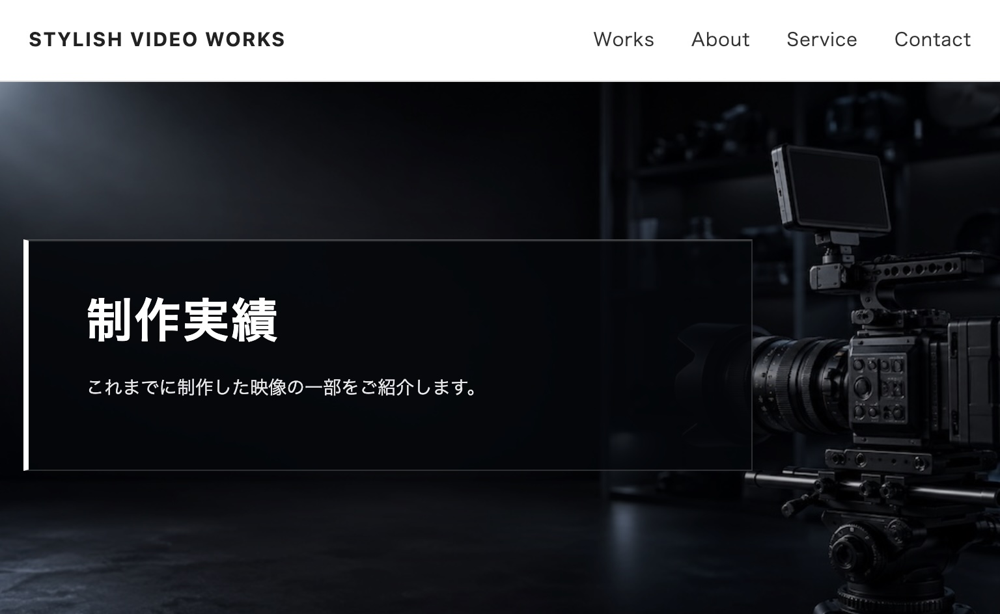
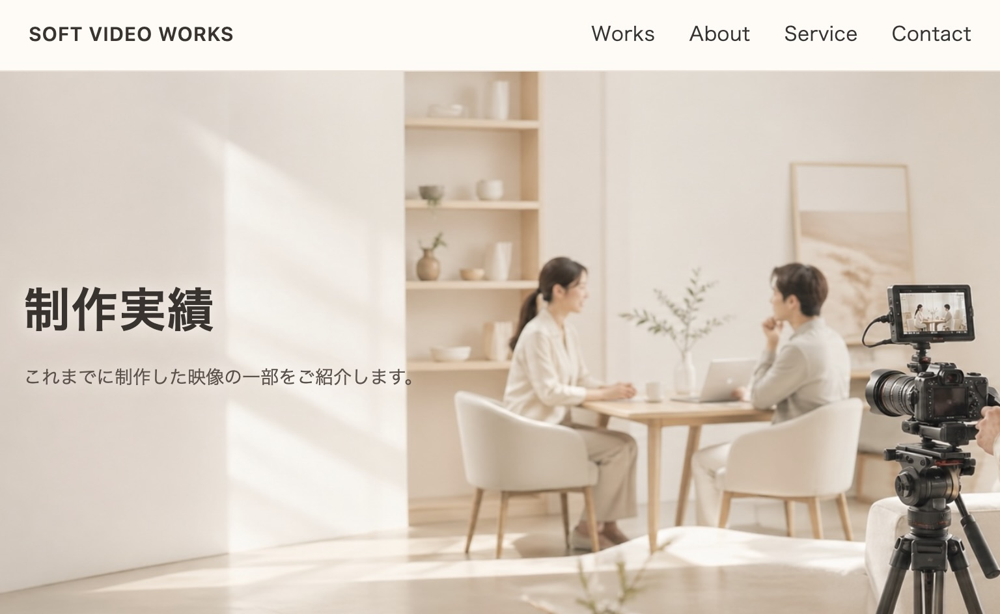

Concept
同じ内容でも、印象は変えられます
小規模サイト基本プランは、トップ・サービス・実績・お問い合わせなど、 小さな事業に必要なページ構成を想定したデモサイトです。
このページでは、同じ内容をもとにした BASIC / STYLISH / SOFT の3つのデザインを見比べることができます。
「きちんと信頼感を出したい」「洗練された印象にしたい」 「やさしく親しみやすく見せたい」など、 仕上がりイメージを考える参考としてご覧ください。
Designs
3つのデザインを見る
各デザインのボタンから、見せ場となるWORKページへ移動できます。 デモ内では他のページにも回遊できます。


Compare
雰囲気の違い
どのデザインが正解というよりも、事業の内容・届けたい相手・見せたい印象に合わせて
方向性を選んでいきます。
お選びいただいた方向性から、さらにお好みのデザインに作り込むことができます。
BASIC
きちんと・信頼感・読みやすい
士業、教室、地域サービスなど、まずは安心して内容を読んでもらいたいサイトに。
STYLISH
洗練・都会的・シャープ
制作会社、クリエイター、技術系など、専門性やセンスを印象づけたいサイトに。
SOFT
やさしい・親しみやすい・相談しやすい
サロン、カフェ、個人教室など、初めての方にも安心感を届けたいサイトに。
Planning
仕上がりイメージから一緒に考えます
どの雰囲気が合うか分からない場合も、 業種・お客様層・載せたい内容を整理しながら、 サイトの方向性を一緒に考えます。